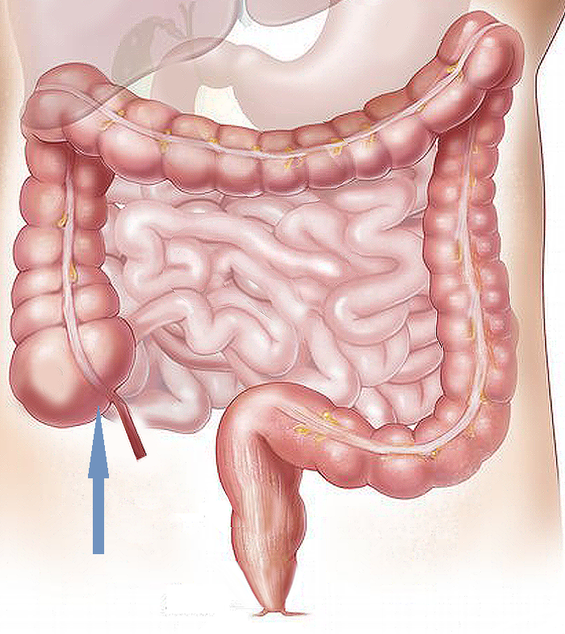

In 2013 during a colonoscopy, the doctors found a 15mm pre-cancerous (benign) polyp near my appendix in my cecum that could not be snipped off, due to its location. My doctor said colon resection surgery was my only option. I eventually found Jim Sease's story online, and saw that other doctors around the country were using EMR (Endoscopic mucosal resection) to remove complex colon polyps such as mine. One of the best EMR doctors in  the world just happened to be in my state, and that’s where I ended up going. He safely and completely removed my polyp from my cecum, and I still have my entire colon.
I’m writing this because there’s a lot of misinformation about the safety and efficiency of EMR among medical professionals in areas that do not perform EMR procedures. I hope my story can help encourage others to investigate other treatment options--regardless of what their doctors tell them--so they can make the decision they feel is best for themselves, whatever that may be.
My polyp was first discovered in 2013 at age 50. I was told I needed to see a surgeon about setting up
a plan to remove part of my colon. The polyp they found was described as a semi-sessile polyp with
an area of flat adenomatous tissue around it. I did not want to go this route, and as luck would have
it, the office where I had my colonoscopy failed to make my appointment with the surgeon and didn’t
realize it. This gave me time to figure out what I wanted to do.
After a bit of research, I knew that
colon polyps were slow growing and do not spread (as long as they’re pre-cancerous); so I changed
my diet to a low carb Mediterranean diet and worked with a cancer researcher and alternative
healer named Nathaniel Mark Mead. I also worked with another healer specializing
in Chinese herbs in Fayetteville AK. I did many things to promote overall mind and body healing, and I
was very disciplined in my diet and other healthy routines to try and slow the growth of and/or shrink
the polyp.
In 2018, I had another colonoscopy and found that the polyp had grown to 20mm, but was still benign.
Both times I had these colonoscopies, my gastro doctors were very anxious and gave dire warnings,
telling me I must have colorectal surgery right away. They had some great scare tactics, like “I
really want you to live to see your children grow up”. There was no mention of EMR as an alternative.
At some point along the way, I saw Jim Sease’s article online,
and contemplated this option, but was still hesitant to take the risk of going for a procedure I knew
little about and that was said to have some risks. However, upon further research, I found that EMR
is safe and effective if you select a doctor who has both been highly trained, has performed at least
100 EMR’s, and has a high success rate. This was a big decision to make; so my husband suggested I call
his gastro doctor, who told me, “I do not recommend to have an EMR. It is dangerous and you could end
up with a colostomy bag.” I thanked him, realizing that he only knows his area of expertise and since
both his medical group and the nearby teaching hospital did not have EMR facilities and training;
they of course were not going to advocate for it.
I still put off the EMR for a few years, because I am one of those people who becomes greatly
weakened for a long time after colonoscopies, due to fascia trouble (I may have pelvic floor dysfunction).
In the meantime, I found a woman who does Mechanical Link therapy
, and that has been very helpful in my fascia recovery after colonoscopies. There are also some
specialized PT’s who do fascia work.
In 2022, I decided I was ready to get my EMR with Dr. Ian Grimm at UNC Hospital
because he is a very highly rated EMR doctor, and because this facility was fairly close to my home.
I emailed him my prior colonoscopy results, and he said he could remove the polyp. Then I scheduled
the EMR, and emailed him three questions:
I'm guessing that the plan is to do the colonoscopy, and if it looks doable, you'll go ahead and do
the EMR while you're in there. Is that correct? That sounds good to me.
--I'm also assuming that you've done over 100 EMR procedures thus far...is that correct?
--Can you give me a rough percentage of how many of your EMR procedures completely remove the polyp
in the first and/or second procedure?
This was his answer:
“I average several EMRs daily, which I have done for over 25 years. Advanced resection procedures
are essentially all I focus on at this point. Almost all polyps can be removed by EMR or ESD
(Endoscopic submucosal dissection), as long as they do not contain invasive cancer.”
So I did my colonoscopy prep as normal, and my sister drove me two hours that morning to Chapel Hill,
where the EMR was performed as outpatient surgery, just as if it were a normal colonoscopy. I
arrived at the hospital around 9am, and after the procedure, I was wheeled to the car and
headed towards home by around 11:30am. Dr. Grimm said he had gotten it all and would call me
with the biopsy results.
I was slightly sore off and on for about a week afterwards, and did have one small amount of red
blood in my stool the day afterwards, but Dr. Grimm and the nurses just said to keep an eye on it
and see if any more blood appeared. None did, and my biopsy showed up benign. The polyp was
described as a fragmented tubulovillous adenoma, 28 x 26 x 4mm in size, and it was completely
removed.
I had a follow-up in 2023, and the site showed just the scar tissue. He removed two other benign
sessile polyps, which were the first ones I’d had since the one in 2013.
If you are under 65 and get an EMR out of your network, you can try to get prior approval by calling
the cost estimates dept. at the EMR facility to get the estimated cost and procedural code for the
procedure. Then find someone in financial assistance at the EMR facility to assist you in working
with your health insurance to get prior approval. Facilities also have financial assistance and
payment plans to help you pay for your procedure. I found it was worth the money to save my colon.
(If you are 65 or older, you should be able to get on Medicare, which would take care of most
everything.)
Here is one of Dr. Ian Grimm’s publications about the effectiveness of EMR: Quality Matters: Improving the quality of care for patients with complex colorectal polyps